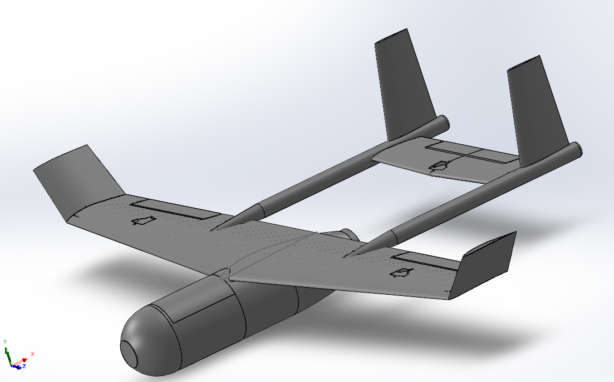
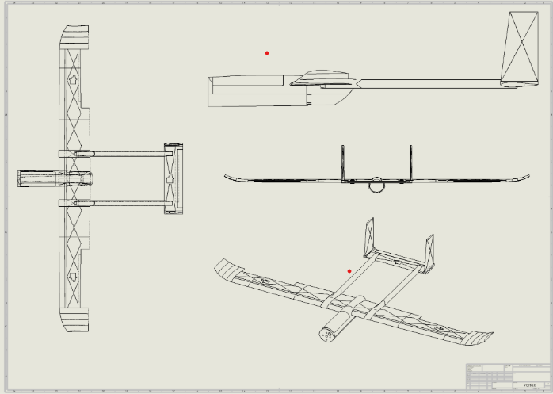

3D Printed Aircraft Competition
Leading fabrication for Virginia Tech's entry in the annual University of Texas Arlington 3DPAC competition. Worked to design, print, and test a fully 3D-printed aircraft.
I'm taking on the Finance Lead position for 3DPAC, managing team expenses, establishing a budget, and securing funding through sponsorships and external partnerships. I'm also coordinating outreach events to showcase the team's work and overseeing the team's Instagram presence.
What we built
3DPAC is Virginia Tech's entry in the annual 3D Printed Aircraft Competition hosted by the University of Texas Arlington. Every component of the aircraft must be 3D printed. I joined as a member of the print sub-team and quickly took a lead in the fabrication of the aircraft.
This year we designed and flew the Vortex, our most refined airframe to date. The design went through four full flight test cycles before competition, each one informing changes to geometry, print parameters, and assembly methods. I worked to print, wire, and fabricate the entirety of the aircraft throughout each cycle.
Photos



My contributions
Managed the print queue and assembly process for all competition aircraft. Set print parameters, handled failure troubleshooting, and maintained structural integrity targets across multiple airframe iterations.
Refined CAD geometries for additive manufacturing — minimizing supports, optimizing wall thickness, and reducing weight without sacrificing structural integrity.
Supported four iterative flight test cycles, logging performance data and feeding observations back into design decisions. Evaluated manufacturability and structural reliability under real flight loads.
Utilized LW-PLA (lightweight PLA) as the primary filament for its exceptional strength-to-weight ratio in airframe applications. Characterized print behavior at various temperatures and speeds to hit target densities.
Competition report — Vortex 2025–2026
Full technical report covering design decisions, manufacturing process, flight test results, and competition outcomes.
Virginia Tech's 3DPAC team won 1st place for Innovation at the 2025 annual competition at the University of Texas Arlington.